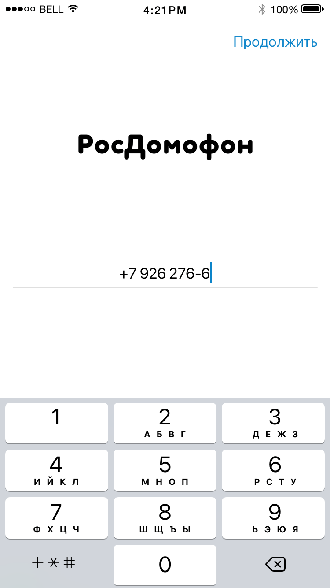
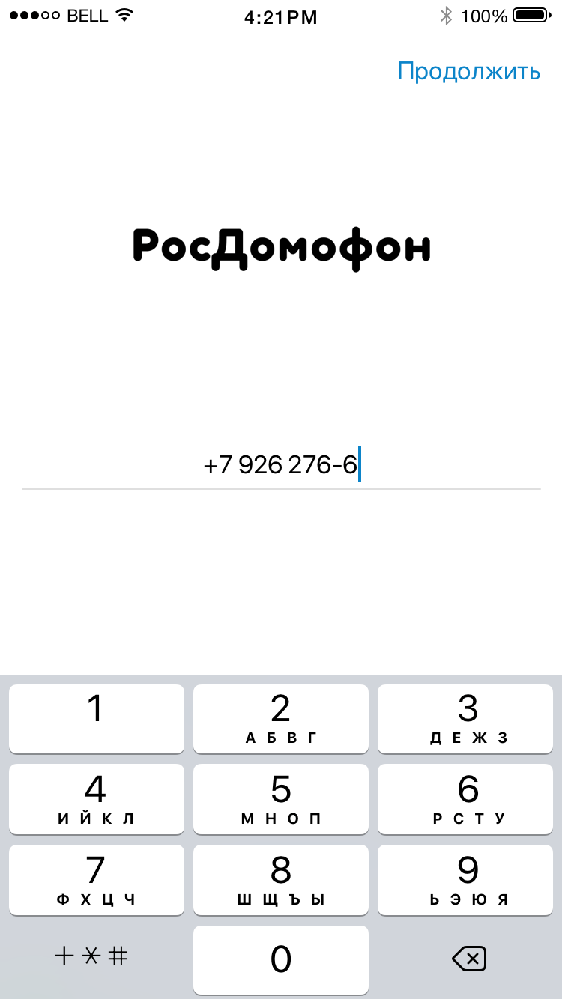
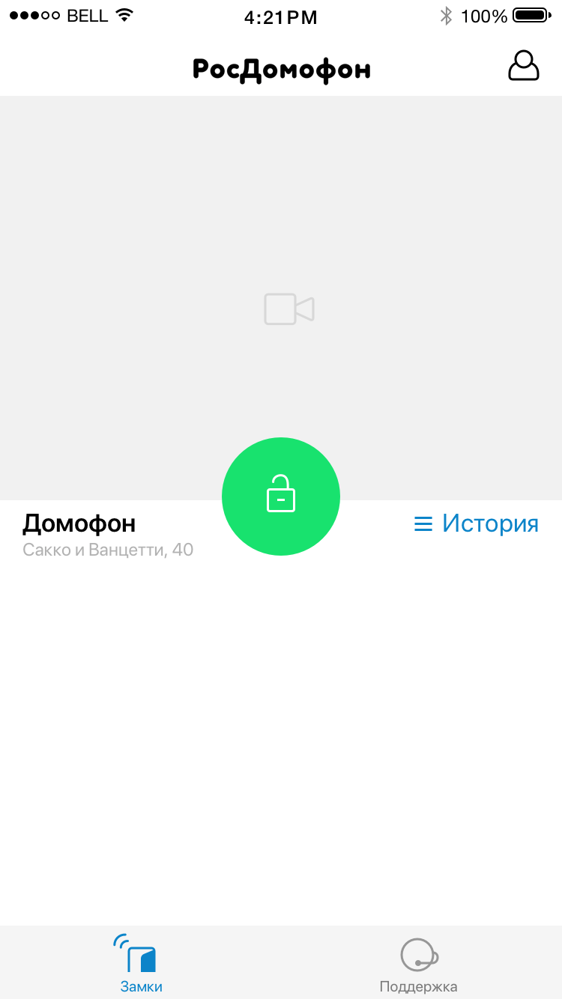

Чем меньше интерфейса, тем лучше. Все лишние кнопки и экраны удаляем. Название улицы удаляем. Все даты приводим в человекопонятный вид — не в ментовке работаем.
Концентрируемся на случае, когда у пользователя одна камера, если он живет в обычном доме. Или на случае, когда пользователь живет в элитном доме и у него три камеры (максимум 5). Про гиков и администраторов района забываем.
В дизайне используем только актуальные скриншоты :-)
Хорошо, что в прототипе убрали «гамбургы» и сделали меню внизу, как в контакте. Но и от него лучше избавиться. Кстати, про бургер, он стал популярен лет 7 назад, когда смартфонами пользовались активные пользователи, когда функционал приложений усложнялся по часам, а телефоны были размером с iPhone 3G. Но бургер это зло, от него отказались все приложения, которые умеют считать стату.
Итак, версия с одной камерой. Отказыавемся от кнопок «камера», изображение с камеры подгружается и отображется не спрашиваясь. Серая иконка может как-то мигать обозначая загрузку видео, это мелочи. Если камеры нет, то, видимо, помещаем соответсвующую иконку с косой чертой. Над анимацией появления загруженного видео надо работать.
Обрати внимание, что кнопка открыть теперь под большим пальцем, а не вверху экрана.
 

Две камеры. Все тоже самое, просто это список камер.

Три и более камер просто превращаются в список со скроллом. Тут важно знать один фокус: рассчитывать расстояние между блокам таким образом, чтобы внизу экрана телефона торчала фотка, а не белое пространство. Тогда пользователю будет очевидно, что экран можно скроллить.
По нажатию на блок (не считая иконки «история» и «открыть») можно расширять картинку камеры.


Во время звонка приложение показывает только этот экран. Тут все понятно: сбросим бомжа, ответим почтальону (и откроем ему), откроем маме.
Функция, что пришла мне в голову. После открытия, дать возможность гостю открывать все шлагбаумы и подъезды по номеру квартиры в течение ограниченного времени. Представь, что к тебе приехал друг, позвонил в калитку/шлагбаум, зачем тебе отвлекаться на звонок в подъезд?


Как ты заметил, я предлагаю убрать нижнее меню. А вся история будет доступна по клику на «часики». Без выбора даты на первом экране, как в прототипе!!! Если выбирать дату, то только внутри экрана. А вообще, пользователям можно давать только последние сутки — хватит им.
Перемотка как в видео на айФоне. Ниже история входящих, где скриншоты нужно сделать чуть крупнее, чем на прототипе, ведь это основная информация.
Вот и все мои мысли, идеи, предложения на текущий момент. Спасибо.